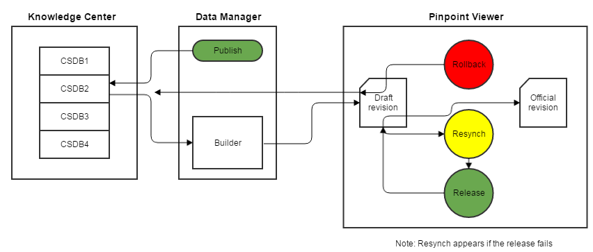

General Process
Not applicable for Pinpoint Standalone Light.
When a builder connected to Knowledge Center S, for instance the A350 Builder, is selected in the Publish Publication panel in Data Manager, the user will be able to select a Knowledge Center CSDB to publish from and the publication type to publish. The selected publication is then fetched from Knowledge Center S directly, the data is converted from XML to Pinpoint Neutral, and it becomes available as a draft in Pinpoint Viewer. How long this process takes depends on the size of the publication.
Users with the appropriate privileges have access to review the publication revision. They can either choose to release the revision to a set of user groups (Pinpoint viewers), or they can rollback, that is, reject it and remove the revision from Pinpoint and Data Manager. Another option is to reload the revision, which removes the revision and imports it again from Data Manager.

Knowledge Center S Publish/Release Process
Related Privileges
- : This resource is used by the Pinpoint Application User to download publications from Data Manager (using e.g. the A350 builder) to Pinpoint. You will need "Read" permissions to that resource to be able to download draft revisions.
- : The user group that can release, rollback, and reload publication revisions in Pinpoint needs to have Read permission to this resource to be able to see and use the rollback/release/reload buttons. Users that do not have this privilege will not be able to see draft revisions in Pinpoint, they will only see the latest released revisions.
- : The user group that can release, rollback, and reload publication revisions in Pinpoint needs to have Read/Write/Delete permission to the publication revision in order to perform release/rollback/reload.
Publishing from Data Manager
The publishing from Knowledge Center S to Pinpoint Viewer is initiated in Data Manager by creating a repository library, a publication plus selecting the appropriate CSDB and publication type. For detailed instructions about the publishing, refer to the section "Create/Publish Publication" in the Flatirons Data Manager User Guide.
If the publishing is successful, the publication will become available as a draft revision for the Pinpoint users that have the appropriate privileges.
As long as the latest publication revision is in draft status, you will not be allowed to add a new revision from Data Manager. (The Add New Revision button will be disabled.) When the publication is released in Pinpoint Viewer, you will see a checkmark in the Released field.
The e-mail notification contains information that identifies the publication, summarizes the problem and provides troubleshooting guidance.
Release, Rollback, and Reload in Pinpoint Viewer
When releasing a publication in Data Manager, the publication can be released as a draft or
released automatically by checking the Auto Release checkbox. If the
publication was auto released and the release was successful, the  Publication Operations icon is not visible in the Pinpoint
Viewer.
Publication Operations icon is not visible in the Pinpoint
Viewer.
- – When pressed, a new dialog with user groups appears. The groups chosen in this dialog will get access to the released version. Refer to Release a Publication Revision for more information.
- – When pressed, the publication revision is removed from the Pinpoint Viewer and the Data Manager. The publication revision resource is also removed from the privilege tree in Access Control module. Refer to Rollback a Publication Revision for more information.
-
– When
pressed, the selected publication revision is deleted, and the revision is imported
again from Data Manager. Refer to Reload a Publication Revision for more
information.Note: You may experience up to a 60-second delay after the reload is complete before the import of the revision begins.